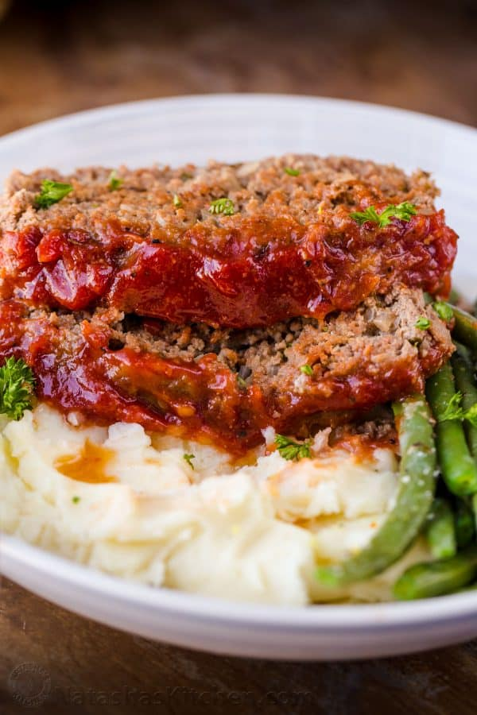

A quick and simple recipe for an oven baked meatloaf and glaze sauce to go on top
Ingredients
- 2 lbs ground beef
- 1 whole white onion chopped
- 2 large eggs
- 3 garlic cloves minced
- 3 tablespoons ketchup
- 3/4 cup panko breadcrumbs
- 1/3 cup milk
- 1 1/2 teaspoon salt
- 1 1/2 teaspoon italian seasoning
- 1/4 teaspoon ground pepper
- 1/2 teaspoon ground paprika
Sauce Ingredients
- 3/4 cup ketchup
- 1 1/2 teaspoon white vinegar
- 2 1/2 tablespoon brown sugar
- 1 teaspoon garlic powder
- 1/2 teaspoon onion powder
- 1/4 teaspoon ground pepper
- 1/4 teaspoon salt
Recipe Instructions
- line baking pan atleast 9"x5" with parchment paper and preheat oven to 375 °F
- In a large bowl, add all of the ingredients for the meatloaf. Mix well to combine.
- Add meat to the loaf pan, gently press meat down and shape evenly and bake meatloaf at 375˚F for 40 minutes.
- In a small bowl, mix all of the ingredients together for the sauce. Spread the sauce over meatloaf then return to oven and bake additional 15-20 minutes
- Rest meatloaf 10 minutes before slicing. Drizzle with baking juices from the pan and serve
Return to top